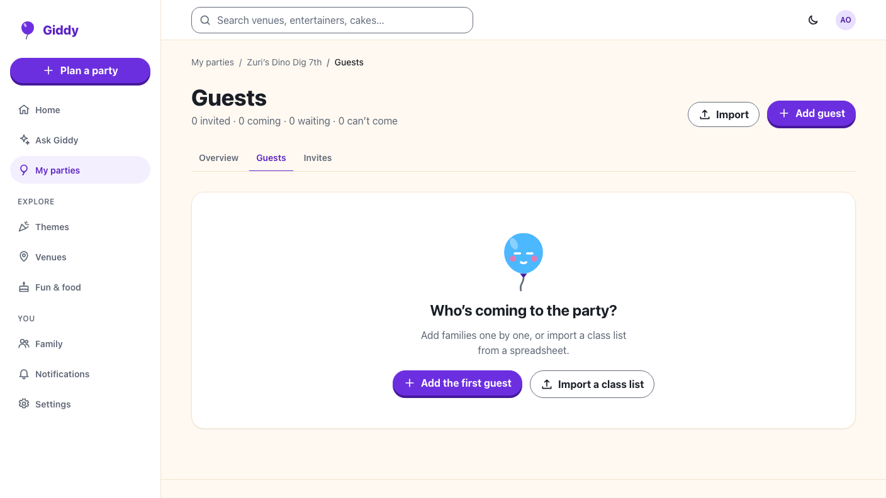
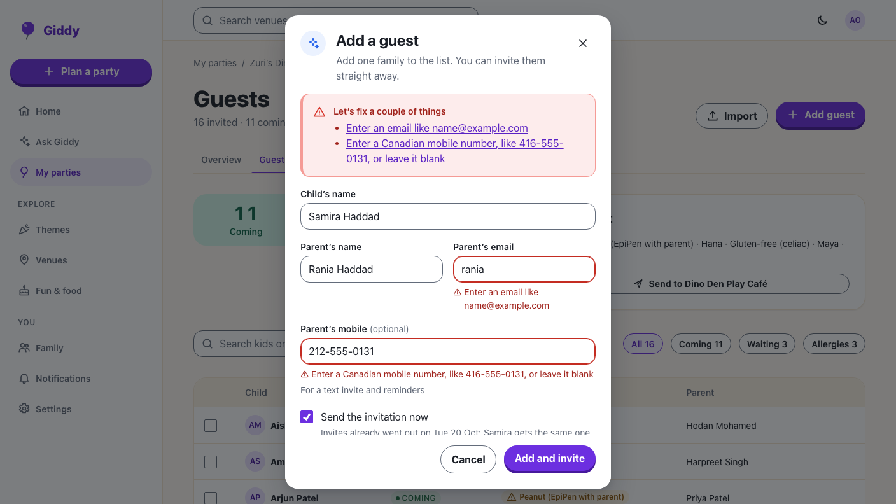
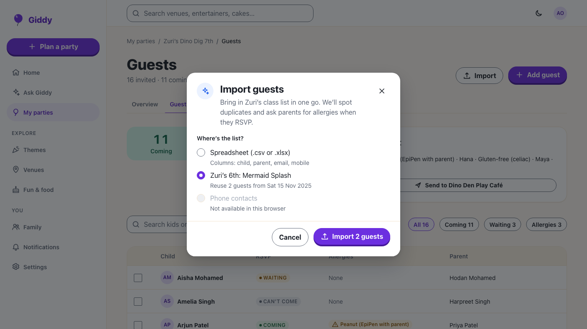

Giddy · Video 07
Build the guest list
Find, add, remove with undo, and import a class list
Find, add, remove with undo, and import a class list

Filters as she types; chips with counts; a missing name becomes a new guest, invited now because invites already went out.

Cancel has focus; the parent isn't messaged; Undo for 8 s restores the reply; the server keeps 10 minutes.
Rows missing an email and guests already listed are named first; upload progress; a report of what was skipped and why.

Adding, duplicates, the 60 limit, send now, remove and restore, links that stop, CSV and Excel import, limits, malware scan, reuse.
Search, chips, row actions, add, remove and undo, import against the fake API, with axe on each dialog.
Next: entertainers, food and cake